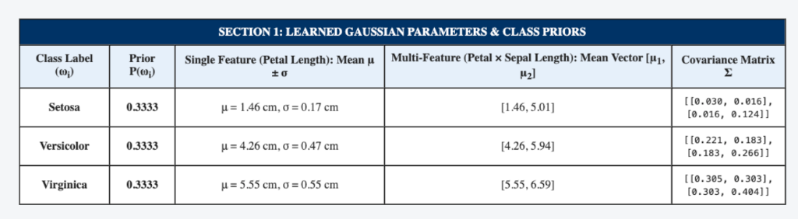
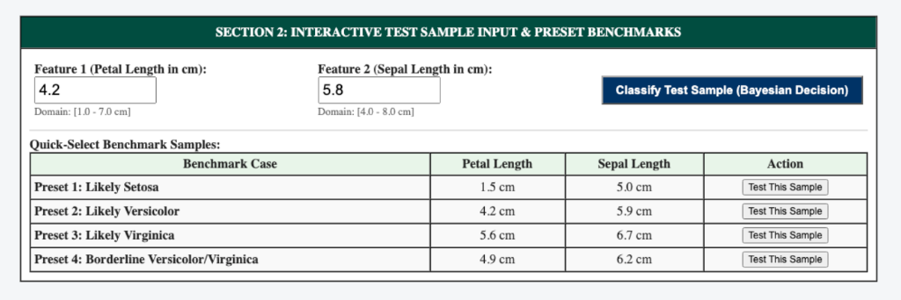
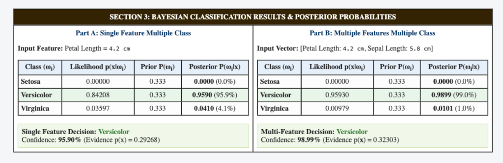
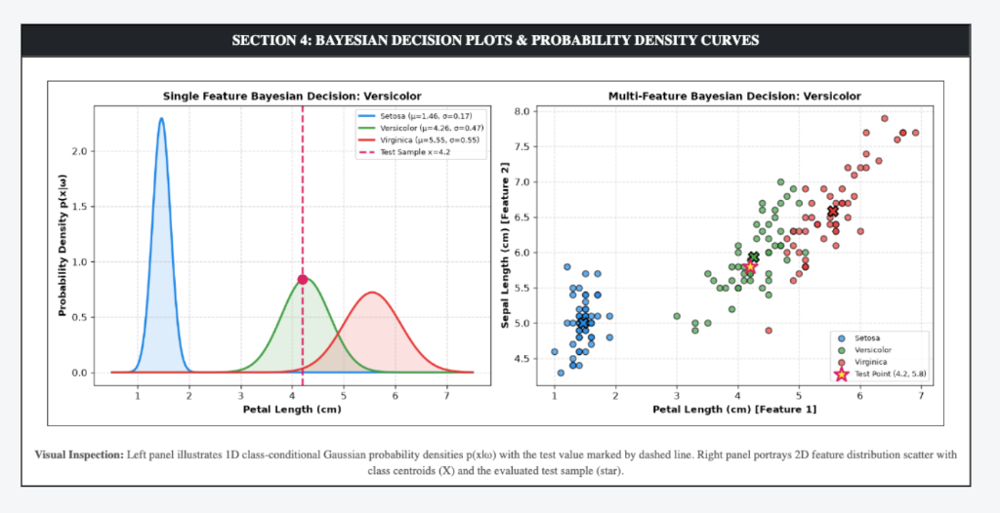

Practical File Submission — Academic Session
Bayesian Classification for Single Feature & Multiple Features Multiple Class Using Flask
To prepare an interactive web application using Flask in Python to implement Bayesian classification for both Single-Feature Multiple-Class and Multiple-Features Multiple-Class scenarios, compute prior, likelihood, and posterior probabilities, and classify test samples using the Maximum A Posteriori (MAP) decision rule.
Bayesian decision theory provides a statistical framework for pattern classification by balancing prior probabilities with class-conditional likelihoods. Under Bayes' Rule:
For a scalar observation $x \in \mathbb{R}$, likelihood is modeled via a 1D normal distribution:
For multidimensional vectors $\mathbf{x} \in \mathbb{R}^d$, the joint density incorporates full covariance interactions:
Created directory exp 4/ containing app.py and verified dependencies (Flask, scipy, numpy, pandas, scikit-learn, matplotlib).
Estimated univariate and multivariate Gaussian parameters (means and covariance matrices) across all three classes.
Evaluated likelihoods, evidence, and normalized posteriors to reach MAP classification decision.
Launched interactive Flask web server on http://127.0.0.1:5006 supporting custom test coordinates and benchmark presets.
Displays univariate means/variances, multivariate mean vectors, and covariance matrices for Setosa, Versicolor, and Virginica.

Interactive inputs enabling real-time classification of any custom floral measurements.

Detailed breakdown of Likelihood, Prior, Evidence, and Posterior Probabilities for Part A (Single Feature) and Part B (Multi-Feature).

1D Gaussian probability density curves alongside 2D scatter decision plot with test sample marker.

GitHub Repository (Clickable):
Direct Source Code Files:
In this experiment, an interactive Bayesian pattern classification system was developed using Flask in Python. The implementation successfully evaluated both Single-Feature Multiple-Class (univariate Gaussian) and Multiple-Features Multiple-Class (multivariate Gaussian) architectures. Prior probabilities, class-conditional likelihoods, and posterior probabilities were computed under Bayes' rule. The Maximum A Posteriori (MAP) decision criterion was demonstrated interactively, revealing how incorporating multiple dimensions (e.g. covariance between features) sharpens class boundaries and resolves ambiguities in overlapping regions.